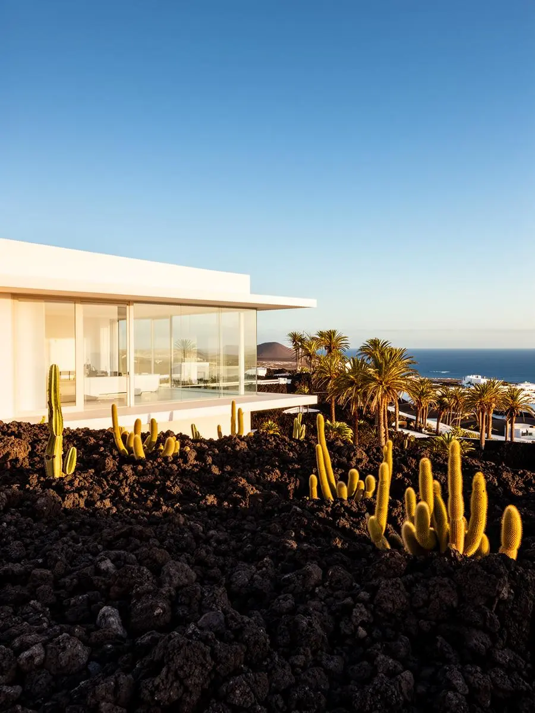

Casas Prefabricadas
Canarias

Normativa, permisos, materiales y clima. Información actualizada para el archipiélago.
Todo sobre licencias municipales, suelo rústico vs urbano, y plazos de tramitación en las islas Canarias. Lo que nadie te cuenta hasta que es demasiado tarde.
Licencia de obra: ¿Cuándo es necesaria y cómo conseguirla.
Suelo rústico: Lo que permite y prohíbe la ley canaria.
Plazos reales: De 6 a 12 meses, según el municipio.
Análisis completo de materiales para el norte, sur y medianías de Canarias. Ventajas térmicas, humedad y mantenimiento en cada zona.
Madera: Ideal para medianías, transpirabilidad y confort.
Hormigón: Mejor para costa, inercia térmica y durabilidad.
Modular: Versatilidad y rapidez, pero con matices.
📖 Próximamente más guías prácticas:
Solicita información personalizada y recibe el presupuesto más competitivo para tu caso.
Solicitar presupuesto gratis